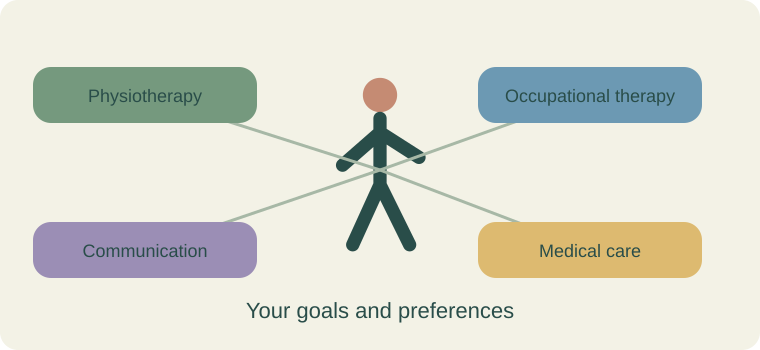
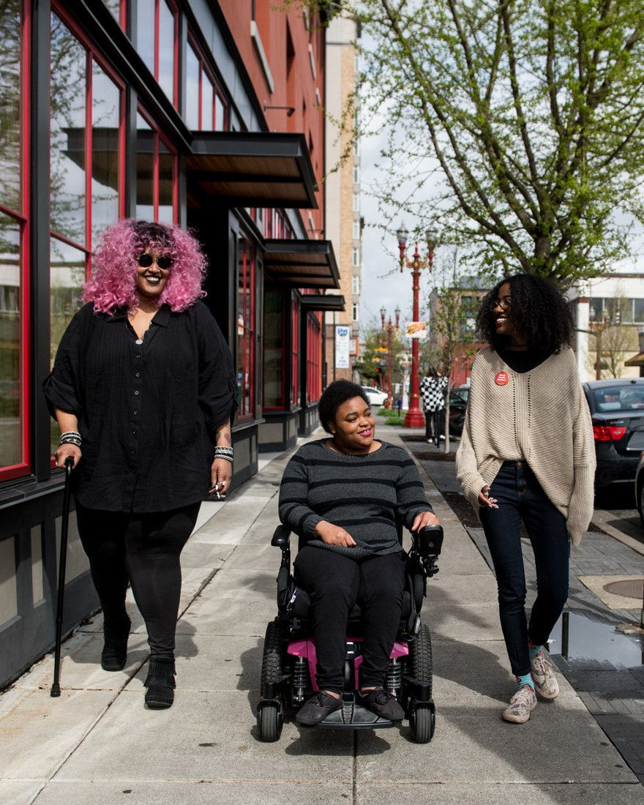

A 2013 NIH research session investigating electrical stimulation for CP-related foot drop. The photograph is not an Erry Mobility device, study or product recommendation.
National Institutes of Health, via Wikimedia Commons. US federal-government public-domain work. No endorsement implied.
ILLUSTRATED GUIDE
What a keyguard adds
Guide walls surround openings above the keys. Explore the rotatable 3D model below.
START WITH YOUR GOAL
Typing & computer access
Keyguards guide a finger through openings. Larger or alternative keyboards, switches, dictation and eye-gaze offer different routes to a message.
Fitting & assessment
Keyguard fit must match the keyboard. Switch placement, positioning and complex access systems need an assistive-technology assessment.
Schematic 3D model: guide walls surround an opening above a key. It does not assess finger control, prescribe equipment or guarantee fewer errors.
Keyguard alignment: Each opening sits above one key. The guide plate separates adjacent targets. A real keyguard must match the keyboard layout and the user’s access method.
A thicker grip or larger fastening may change a task’s demands. Suitability depends on the person and the task.
START WITH YOUR GOAL
Dressing & hand tasks
Adapted pen and utensil grips, non-slip mats, button hooks, larger fastenings and clothing adaptations can reduce task demands.
Fitting & assessment
Choose tools around your grasp, sensation and comfortable range. Splints and orthoses require professional fitting; a heavier grip is not automatically better.
Boards, switches and speech output can work in different combinations. Access and vocabulary need individual assessment.
START WITH YOUR GOAL
Communication
Picture boards, signing, text-to-speech and speech-generating devices can support communication. A switch or eye-gaze may provide access.
Fitting & assessment
Speech and language therapy can assess communication and swallowing concerns. AAC assessment should include access, vocabulary and personal preferences.
Speech and language therapist with an access specialist as needed.
Choose a word to see it in the message area. This is an illustrative access example, not a personalised communication system.
This board sends no message to another person. An SLT can help assess a communication system that suits you.
ILLUSTRATED GUIDE
A team around your goals

Care can bring together movement, daily-task, communication and medical expertise. Your preferences stay central.
02 / TREATMENT & SUPPORT
What can help? Start with what matters to you.
There is currently no cure that reverses CP’s underlying brain injury. Treatment can address specific symptoms and make activities more comfortable or accessible.
MOVEMENT & DAILY LIFE
Physiotherapy and occupational therapy
A physiotherapist can tailor movement and support. An occupational therapist can adapt reaching, typing, washing and carrying tasks, including one-handed techniques.
Ask: “Can we practise the actual task I struggle with?”
EQUIPMENT & ACCESS
Change the task or the environment
Orthoses, mobility aids, seating, assistive technology and home adaptations may help. For dishes, explore a lightweight plate, non-slip mat and closer work surfaces with an occupational therapist.
Ask: “Which setup lets me do this with less strain?”
SYMPTOM MANAGEMENT
Medicines and injections
Clinicians may consider baclofen for generalised spasticity or botulinum toxin for selected muscles. Benefits and side effects vary. Reducing tone can sometimes affect standing or transfers.
Ask: “What specific benefit are we aiming for, and what might change?”
SPECIALIST OPTIONS
Procedures for selected needs
Some people benefit from orthopaedic surgery, an intrathecal baclofen pump, or specialist procedures for severe dystonia. These need individual assessment, discussion of risks and rehabilitation planning.
Ask: “What are my alternatives, expected outcomes and recovery needs?”
WHOLE-PERSON CARE
Communication, nutrition and wellbeing
Speech and language therapy can support communication and swallowing. Dietetic advice, pain and sleep care, and mental health support can be part of your plan.
Ask: “Who can help with the part of daily life that is hardest right now?”
YOUR NEXT STEP
A plan that can change with you
Share your journal and one meaningful goal with a clinician. Request a review when pain, fatigue or function changes. Ask about a multidisciplinary adult CP or rehabilitation service where available.
Ask: “When will we review whether this is helping?”
What about alternatives, new treatments or a “fix”?
Adaptations, pacing and assistive equipment are valid alternatives to doing a task in the usual way. A treatment decision can also be to wait or focus on comfort. Discuss the evidence, costs and risks of complementary or experimental approaches with a qualified clinician; do not replace established care or stop medicines on your own. This site does not offer a cure or promise that exercise will remove CP.
Listening, peer connection, rest and accommodations belong alongside physical care.

Connection and participation
Different ways of moving can share the same space.Photo: Chona Kasinger / Disabled And Here, CC BY 4.0. Resized. No diagnosis is assumed.
An environment that makes room
Open counter space and shared activities illustrate access in everyday life.Photo: Chona Kasinger / Disabled And Here, CC BY 4.0. Resized. These people are not identified as having CP.
Emotional wellbeing
Effort, frustration, pain and exclusion can affect wellbeing. Your feelings deserve attention. Ask a clinician about accessible mental health support and how pain, sleep or communication barriers may contribute.
Peer support
Meeting people with lived experience can reduce isolation. Share only what you choose; peer stories do not replace individual clinical care.
Discuss accessible routes, assistive input, rest breaks, flexible task timing and alternative ways to demonstrate learning at school, university or work. Rights and local services differ by country.
Source: NICE adult CP guidance. If you need urgent help, contact local emergency or crisis services.